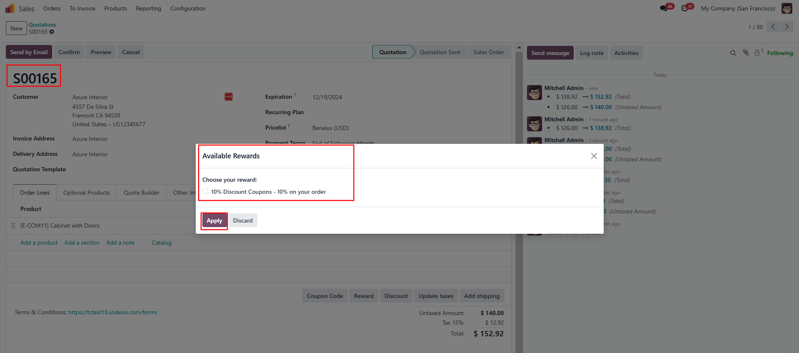
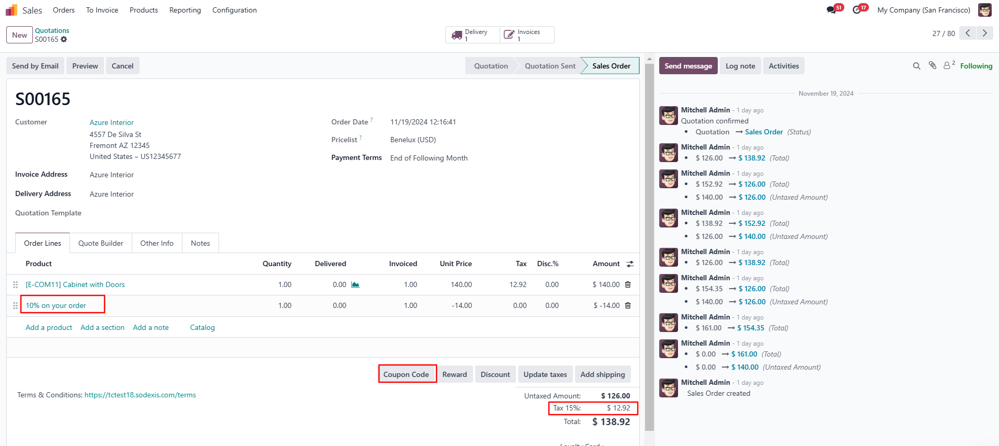
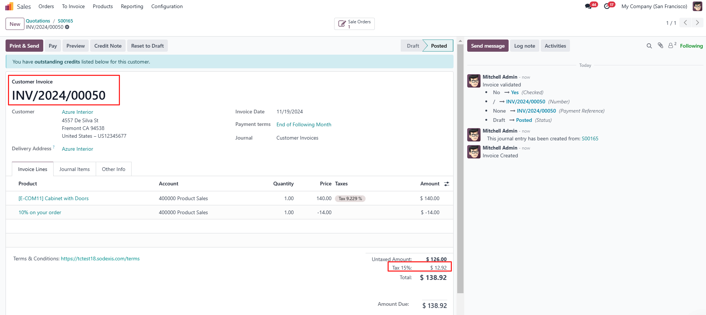
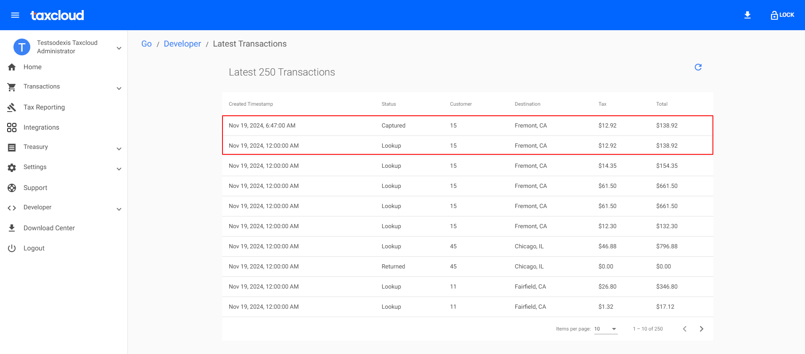
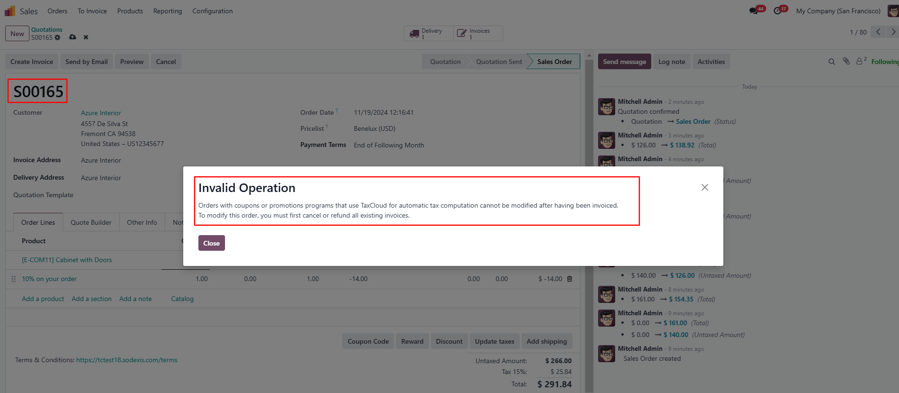
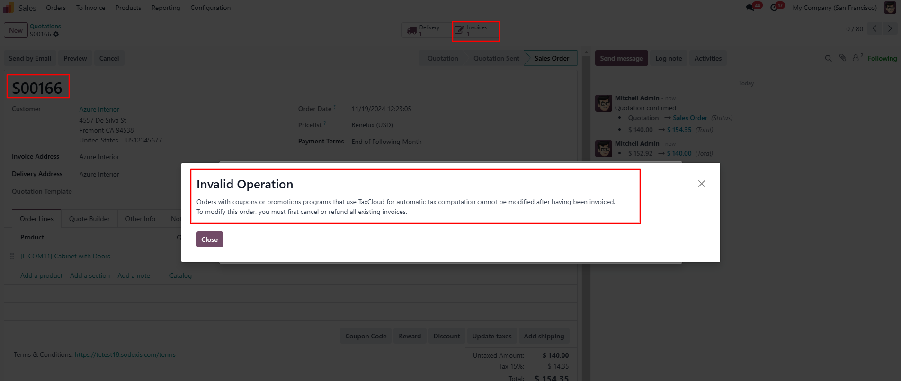
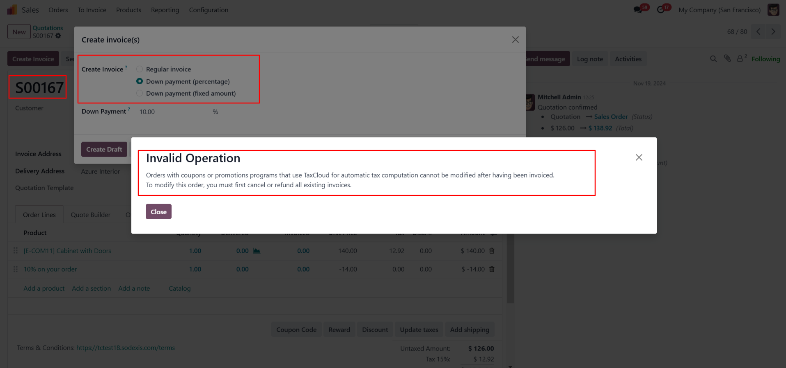

Account TaxCloud - Sale (loyalty)
Description
This module integrates Odoo with TaxCloud, enabling the automatic computation of
sales tax on invoices within the Odoo platform. From Odoo 17, new installations are prohibited, and from
Odoo 18, the TaxCloud module(s) won’t exist at all. It manages discounts in tax computations on
TaxCloud. It is compatible with multi-company environments.
Module Installation
- Users must download all the official TaxCloud modules listed
below from the Odoo Apps Store before proceeding with the installation process, even if
they don’t use the related Odoo TaxCloud modules. This ensures they get all the TaxCloud features
and proper data transmission. If they use “Deploy on Odoo.sh”
in the Apps Store, they must deploy all the modules listed below.
- For example, suppose users have not installed the
Subscription app but have installed the Sales app. In that case, they are still recommended to download
all the official TaxCloud modules before installing the “Account
TaxCloud” module. The “Account
TaxCloud - Sale” modules are installed based on the installed
modules list. In the future, installing the Subscription app will automatically install the needed
“TaxCloud and Subscription” module. This
ensures they do not miss any of the TaxCloud features.
- Users did not use the Odoo TaxCloud Modules:
- If users are not currently using the Odoo module, they
can install this module by simply clicking the “Activate” button and following the configuration
steps below.
- Using Odoo TaxCloud Modules:
- Switching from the Odoo TaxCloud module to our
connector in odoo V17
- If users are currently using the Odoo TaxCloud module, then they
should not uninstall the current module before
installing this module; otherwise, they will lose all of their data. This module will take care of the
configuration & data transmission from the
existing module and automatic uninstallation of the Odoo TaxCloud module once installed. It is not necessary to reinstall the Odoo TaxCloud module.
- Migrating from Odoo 17 to Odoo 18 or from Earlier
Versions to Odoo 18
- Migrating from Odoo 17 to Odoo 18
- First, switch to the official connector in Odoo 17 to
prevent data loss. Then, proceed with the migration to Odoo 18 using our connector.
- Migrating from earlier versions to Odoo 18
- First, migrate to Odoo V17 using our official connector.
Then migrate to Odoo 18 to ensure all data is retained.
- Alternatively, the module can be installed directly in
Odoo 18 as a fresh installation and configured from scratch.
For any technical queries or support, contact us at 📧taxcloud@sodexis.com or visit the website at 🌐sodexis.com/taxcloud. Free support for the installation to the first few customers will be provided.
Configuration
The technical and functional configurations are detailed in the “Account TaxCloud” document. Please refer to the
documentation for any questions regarding TaxCloud.
Functionality
Navigate to the Sales app and create a sales order. Apply Loyalty (10% on your order) to the sales
order.

This module calculates the tax only for the discounted
price in both sales orders and invoices.
Sales Order

Invoice

In the TaxCloud website, under the Transactions menu, select Reports, which shows the recent transactions in
Odoo.
The status of the sales order can be seen as “Lookup” and the invoice as “Captured” with the computed taxes as shown
below.

When a coupon is applied to a
sales order and an invoice is generated, users are
restricted from modifying the quantity or adding new sales order lines. Any attempt to do so will trigger a
pop-up error.

Users cannot apply coupons when the sales order has
already been invoiced.

Users are not allowed to do partial invoices
(Down Payments), which triggers a pop-up error.

Document Version: 1.0
Credits
Contributors
For additional information or inquiries regarding TaxCloud, feel free to reach out
to us at
Sodexis <📧taxcloud@sodexis.com> or visit our
website at <🌐sodexis.com/taxcloud>
This module is maintained by Sodexis.